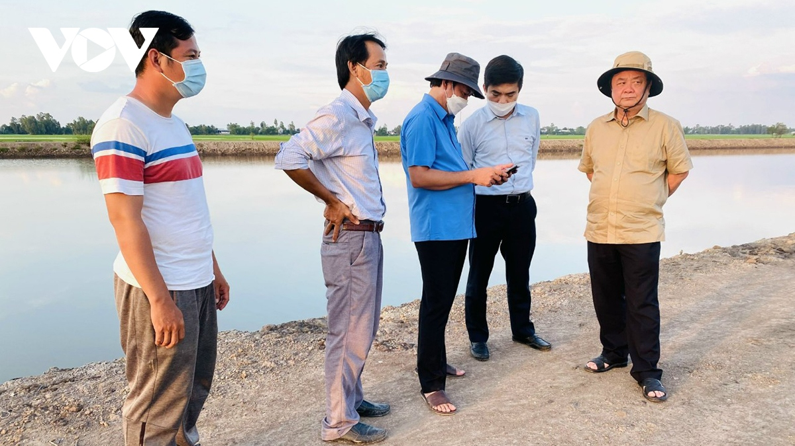

Nhà báo Xích Lô: Tôi chỉ là người tiếp nối, lan tỏa thêm nhiều câu chuyện tử tế

VOV.VN - Nhiều năm qua, bút danh “Xích Lô” với mảng đề tài nông nghiệp – nông dân- nông thôn đã trở nên quen thuộc trên các trang báo. Bộ trưởng NNPTNT Lê Minh Hoan cho biết bản thân ông chưa được đào tạo qua trường lớp báo chí chính quy, nhưng ông đã thích và viết báo với bút danh Xích Lô.